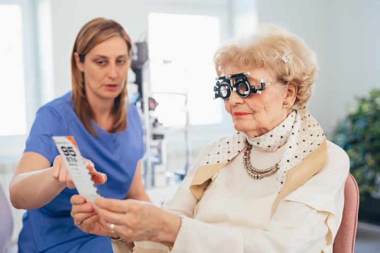

Eine Deutsche half ihrer Mutter, ihre Sehkraft, ohne chirurgischen Eingriff, wieder herzustellen


Ein von einem deutschen Professor entwickeltes innovatives Mittel ermöglicht es Tausenden von Menschen, Probleme mit der Sehkraft, ohne Operation loszuwerden. Ada Weber aus Oranienburg erzählte, wie die Sehkraft ihrer Mutter in kürzester Zeit wieder hergestellt wurde.
„Meine Mutter ist 65 Jahre alt. Vor vier Jahren merkte sie, dass ihre Sehkraft nachgelassen hat. Das alles fing mit einem leichten Unbehagen in den Augen an. Danach begann meine Mutter aber, sich immer öfter über das Verwischen und die Unschärfe zu beklagen. Ich muss es ehrlich sagen: Ich begann mir große Sorgen zu machen, dass meine Mutter ihre Sehkraft vollständig verliert und die Gesichter ihrer geliebten Kinder und Enkelkinder nicht mehr sieht. Die Sehkraft meiner Mutter war lange absolut instabil – und nach langem Überreden erklärte sie sich dann doch bereit, einen Arzttermin zu vereinbaren. Wir rechneten damit, dass die Kosten für die Wiederherstellung der Sehkraft sehr hoch sein würden. Wir analysierten verschiedene Behandlungsmethoden und legten Geld zur Seite. Im Endeffekt stellten wir nicht nur die Sehkraft meiner Mutter, ohne Operation wieder her, sondern sparten auch fast die gesamte zurückgelegte Summe!“.
Ich muss es ehrlich sagen: Ich begann mir große Sorgen zu machen, dass meine Mutter ihre Sehkraft vollständig verliert und die Gesichter ihrer geliebten Kinder und Enkelkinder nicht mehr sieht.
EINE INNOVATIVE METHODE ZUR WIEDERHERSTELLUNG DER SEHKRAFT
„Ich saß im Krankenhaus und wartete wieder auf meine Mutter. Sie war bei der nächsten Untersuchung. Ihr behandelnder Arzt kam auf mich zu und bat mich, in seinen Praxisraum zu gehen.
Ehrlich gesagt war ich mir in diesem Moment sicher, dass ich enttäuschende Prognosen hören werde. Aber ich lag falsch!
Der Arzt gab mir eine kurze Zusammenfassung der Diagnose und sagte, dass meine Mutter nicht operiert werden müsse. Er erzählte mir die Geschichten vieler seiner Patienten, denen es gelang, ihre Sehkraft mit Hilfe eines innovativen Mittels wieder herzustellen, das von einem deutschen Professor entwickelt wurde.
Ich glaubte nicht an seine Worte, da ich davon überzeugt war, dass die Verschlechterung des Sehkraft in unserem Fall, mit altersbedingten Veränderungen zu tun hatte. Können Kapseln eine altersbedingte Krankheit heilen? Der Arzt überzeugte mich aber, dass dieses Produkt ursprünglich als Methode zur Behandlung von Sehstörungen bei Menschen, mit über 40 Jahren, ausgearbeitet wurde.
Lassen Sie mich Ihnen erzählen, warum wir uns für -Kapseln entschieden haben. Es ist ein Naturprodukt, das von einem führenden Professor am Klinischen Ophthalmologischen Institut in Berlin entwickelt wurde. Zuerst konnte der Professor wahrscheinlich nicht einmal daran glauben, dass er so ein effektives Mittel erfunden hatte. Dutzende erfolgreicher klinischer Studien und Tausende zufriedener Kunden – jetzt wird sowohl von berühmten Ärzten als auch von Persönlichkeiten des öffentlichen Lebens empfohlen.
Nach dem Gespräch mit dem behandelnden Arzt meiner Mutter, las ich eine Menge positiver Bewertungen und entschied mich dann, die Kapseln zu bestellen. Aber ich beschloss, das Produkt nicht nur an meiner Mutter, sondern auch an mir selbst auszuprobieren. Ich hatte keine ernsthaften Probleme, aber wegen der Arbeit am Computer musste ich bereits eine Brille tragen, was meine Augen oft müde macht. Ich gab eine Bestellung auf.
Nach 5 Tagen waren die Kapseln schon bei mir. Ich las die Anleitung und wir legten los.
Die Packung enthält Kapseln in zwei verschiedenen Farben. Wir nahmen nachmittags 2 Kapseln (eine von jeder Farbe) und abends 2 Kapseln (eine von jeder Farbe), mit etwas Wasser ein.“
DAS ERGEBNIS
„Meine Mama nahm Kapseln regelmäßig ein, ohne eine einzige Kapsel auszulassen. Ihr ganzes Leben lang reagierte ihr Körper negativ auf die Arzneimittel. Sie werden es nicht glauben, aber war fast das einzige Mittel, bei dem meine Mutter keine einzige Nebenwirkung verspürte.
Nach 3 Wochen der Einnahme gingen meine Mutter und ich zu einem Sehtest. Und… wir waren so überrascht!
Die Sehkraft meiner Mutter normalisierte sich um 65 %. Dies geschah in nur 21 Tagen, ohne Operation. Meine Mutter begann, die Welt wieder klar zu sehen. Beim Arzttermin weinte sie vor Glück.
Meine Ergebnisse waren auch erstaunlich. Die Sehkraft verbesserte sich von -3,00 auf -1,25! Unvorstellbar? In nur 21 Tagen! Auf Empfehlung des Arztes entschieden wir uns, die Kapseln weiter einzunehmen, um das Ergebnis zu festigen. Ganz unerwartet wurde zur Rettung für zwei Familienmitglieder unterschiedlichen Alters, mit einem Schlag.
Natürlich musste ich einfach nach so erstaunlichen Ergebnissen meine Erfahrungen mit anderen teilen. Ich bin mir sicher, dass viele auch an einer Sehbehinderung leiden und hoffen, diese ohne große Kosten und chirurgische Eingriffe wiederherzustellen.
Im Moment kann man auf der offiziellen Website bestellen. Der Preis wird Sie auf jeden Fall überraschen - er entspricht dem Preis von drei Packungen Kontaktlinsen! Stimmen Sie zu, in der Regel ist die Wiederherstellung der Sehkraft VIEL teurer.
Ich hoffe wirklich, dass meine Geschichte Ihren Lesern helfen wird und sie die Welt auf eine neue Art und Weise sehen werden. Wenn jemand von Ihnen dieses Mittel bereits genommen hat, teilen Sie bitte Ihre Meinung in den Kommentaren weiter unten, mit.“
Unsere Journalisten haben sich entschieden, mehr über dieses Produkt von einem führenden Spezialisten auf dem Gebiet der Augenheilkunde zu erfahren. Hier ist, was bei diesem Interview herausgekommen ist.
Frau Professorin I. Vogel ist eine führende Augenärztin der Weltgesundheitsorganisation (WHO), die weltweit gegen Erblindung kämpft.
– Dr. Vogel, sagen Sie uns bitte, wie relevant Sehprobleme für die moderne Gesellschaft sind?
– Weltweit leiden etwa 2,2 Milliarden Menschen in irgendeiner Form an Störungen der Sehkraft. Laut WHO sind die wichtigsten darunter: unkorrigierte Refraktionsfehler (Kurzsichtigkeit, Weitsichtigkeit oder Hornhautverkrümmung) - 43 %, Katarakte - 33 %; Glaukom - 2 %. Aber wir sind fest davon überzeugt, dass 80 % aller Fälle von der gestörten Sehkraft verhindert oder geheilt werden können.
- – Können Sie uns mehr über die innovative Methode der Wiederherstellung der Sehkraft durch , erzählen?
– ist ein Naturprodukt auf Basis natürlicher Extrakte. Die Formel trägt dazu bei, den Funktionszustand des Sehorgans aufrechtzuerhalten und die Stoffwechselvorgänge im Gewebe des Auges, unter Bedingungen erhöhter Sehbelastung, bei intensiver Lichteinwirkung und erhöhter UV-Strahlung, beim Tragen von Kontaktlinsen und Brillen, zu normalisieren, um die Entstehung oder das Fortschreiten von Krankheiten zu verhindern, wie: Neuritis (Entzündung) des Sehnervs, grauer Star, Chorioretinitis (Entzündung der Aderhaut des Augapfels), Netzhautablösung, Keratitis und Konjunktivitis.),
hat ein Qualitätszertifikat. Es hat ein Dutzend klinischer Studien bestanden, die die gesamte medizinische Fachwelt einfach erstaunt haben. Unter den offensichtlichen Vorteilen des Produkts hebe ich das Fehlen von Nebenwirkungen und eine einfach unglaubliche Zusammensetzung hervor.
Pinienrinden-Extrakt unterstützt die Durchblutung der Augen und den Augeninnendruck bei Erkrankungen der Netzhaut. Heidelbeer-Extrakt hat ausgeprägte vasokonstriktive und antibakterielle Eigenschaften. Heidelbeeren stellen nicht nur die Schutzmechanismen des Gewebes der Netzhaut wieder her, sondern fördern auch die Regeneration des lichtempfindlichen Pigments Rhodopsin.
Il betacarotene contenuto nel prodotto è molto importante per i fotorecettori dell'occhio e normalizza i processi metabolici nella cornea.
Beta-Carotin in der Zusammensetzung, ist an den Mechanismen der Photorezeption des Auges beteiligt und normalisiert Stoffwechselprozesse in der Hornhaut. Ich kann dieses Mittel definitiv jedem empfehlen, der eine Störung der Sehkraft erlebt hat!
– Danke Dr. Vogel! Möchten Sie unseren Lesern noch etwas wünschen
„Ich kann Ihnen nur Eines wünschen. Passen Sie auf sich und Ihre Sehkraft auf! Jedes Problem kann gelöst werden - alles, was Sie brauchen, ist Ihr eigener Wunsch es zu tun!
Otto Schmidt
Ich trage seit ungefähr 10 Jahren regelmäßig eine Brille. Ohne sie sehe ich einfach nichts. Sie haben keine Ahnung, wie ich es satt habe ... Vielleicht sollte ich auch ausprobieren und endlich die Dioptrien aufgeben.
Felix Hoffmann
Denken Sie immer noch daran, die Kapseln zu kaufen oder nicht? Ich rate Ihnen, nicht lange nachzudenken - es ist ein sehr tolles Produkt! Dank ihm habe ich meine Sehschärfe zurückgewonnen und alles, was mich umgibt, wieder klar gesehen!
Emil Meyer
Ich habe auch für meine Eltern bestellt. Das Produkt wurde 4 Tage nach der Bestellung geliefert. Die Eltern haben vor kurzem angefangen es zu nehmen und sie haben bereits positive Veränderungen bemerkt.
Emilia Keller
Mein Vater nimmt seit 3 Wochen ein, die Ergebnisse sind schockierend!!! Ich bin so glücklich für ihn((
Gisela Winkler
ist im Trend und in Italien nehmen es meine Freunde schon seit 6 Monaten. Diese Kapseln sind auch nützlich für diejenigen, die vor dem Monitor sitzen.
Max Berger
Nur dank sehe ich es jetzt um ein Vielfaches besser. Diese Kapseln wurden zu meiner Rettung!
Johann Roth
Vielen Dank für einen sehr nützlichen Artikel! Ich habe das Mittel bestellt. Wie sich herausstellte, ist die Nachfrage nach diesem Mittel jetzt sehr hoch! Ich habe immer noch Glück, dass ich es geschafft habe, es zu bestellen!
Dieter Schulz
Wir haben mit meiner Frau beschlossen, die Kapseln zur Vorbeugung zu nehmen. Wir beide haben, mit über 50 Jahren, eine genetische Veranlagung für Sehbehinderung. Ich wollte die Risiken vermeiden
Helga Koch
Ich habe es nicht verstanden, wo ich das Produkt bestellen kann? Ich konnte es nicht in den Apotheken finden…
Wolfgang Baumann
Es ist schade, dass es vor 10 Jahren noch nicht gab:( Ich hätte meine Probleme schon damals verhindern können… Es scheint, dass die Kapseln mir hervorragende Ergebnisse gebracht haben, aber mir ist bewusst, dass, wenn ich sie früher eingenommen hätte, das Sehvermögen vollständig wiederhergestellt wäre
Hannah Vogt
Ich glaube, ich sehe ohne Brille viel attraktiver aus. Dank !
Ludwig Winter
Leute, ich bin 48 Jahre alt, denkt Ihr, es ist noch nicht zu spät, zu nehmen?
Axel Lange
Natürlich ist es noch nicht zu spät, ich bin 45 Jahre alt und meine Augen sehen nach 3 Monaten, um ein Vielfaches besser.
Ursula Stein
Es sind nach der Einnahme zwei Monate vergangen und mein Vater kann wieder klar sehen! Vielen Dank an die Hersteller dieses Mittels!
Marie Krause
Das Ergebnis ist außergewöhnlich, ich bin glücklich, dass ich alles perfekt sehe. Ich fühle mich jung und gesund!
Heidi Hartmann
Wow, ein großartiges Mittel!
Manfred Albrecht
Ich habe es geschafft, mit einem Rabatt von -50 % zu bestellen. Ich warte auf die Lieferung.
Ella Seidel
Ich nehme diese Kapseln seit zwei Wochen und kann sagen, dass ich nicht so schnell, solche Ergebnisse erwartet habe. Das ist absolut ERSTAUNLICH!
Ben Ziegler
Es war nur notwendig, das Sehvermögen wiederherzustellen, um sich wieder glücklich zu fühlen!
Louis Kuhn
Ich habe es für meine Eltern zu einem attraktiven Preis bestellt. Jetzt machen sie beide eine Kur, fühlen sich jeden Tag besser. Sie haben sogar aufgehört, Ihre Brille zu Hause zu tragen - und das ist eine große Verbesserung!
Frieda König
Nur damit Sie es wissen, ist nicht nur für Personen über 40 geeignet. Mein 27-jähriger Freund hat dank dieser Kapseln sein Sehvermögen wieder hergestellt.
Lina Pohl
Ich werde es für meinen Mann bestellen! Ich habe mehr als einmal von diesem Mittel gehört)
Franz Groß
Ich habe bestellt, weil mir die natürliche Zusammensetzung sehr wichtig ist. Das letzte Mal, als ich chemische Produkte verwendete, bekam ich eine starke Allergie …